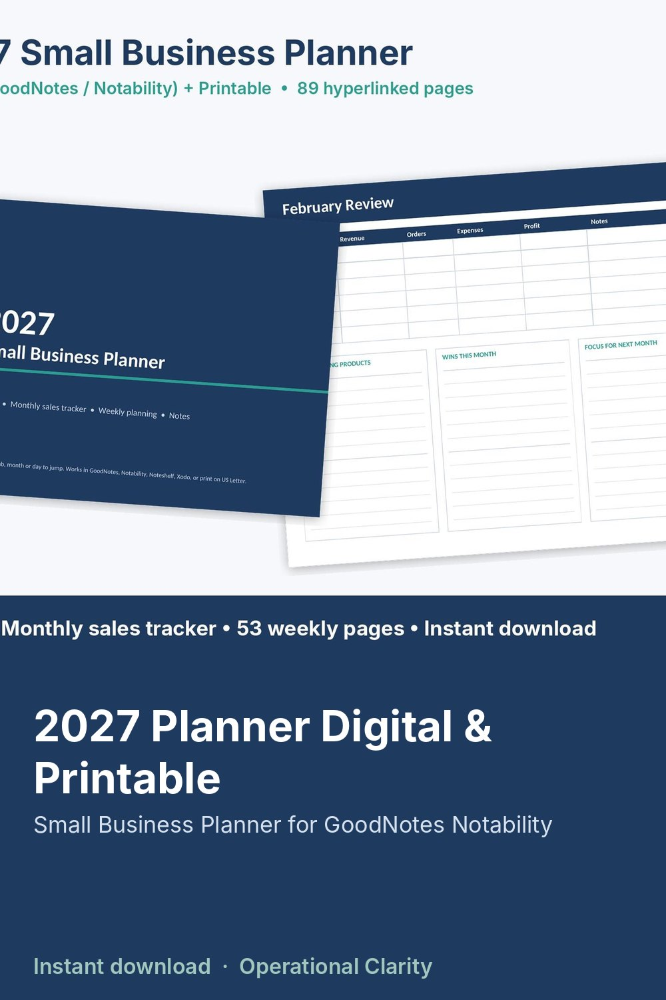

2027 Planner Digital & Printable

2027 SMALL BUSINESS PLANNER | Digital Planner for GoodNotes & Notability + Printable | 89 Hyperlinked Pages | Instant Download
A planner built for small business owners, Etsy sellers and side hustlers: set your 2027 goals, track monthly sales, and plan every week, all in one hyperlinked PDF.
WHAT'S INSIDE (89 pages)
• Cover + 2027 year at a glance (tap a month or a day to jump to it)
• 2027 business goals: revenue goal, launches, marketing, systems, what to stop, your "why"
• 4 quarterly plans: top 3 priorities, revenue/orders/products/customers targets, monthly focus
• 12 monthly calendars (Monday start) with a sales goal box: revenue & orders target vs actual
• 12 monthly reviews: weekly revenue, orders, expenses and profit table, best sellers, wins, next month's focus
• 53 weekly pages: Mon-Sun planning, top 3 priorities, to-do list, weekly sales box
• 5 notes pages
• Side tabs on every page: Year, Goals, Q1-Q4, Jan-Dec, Notes
HOW TO USE
• Digital: import the PDF into GoodNotes, Notability, Noteshelf, Xodo or another PDF annotation app that supports links, and write with your stylus. Tabs, months and days are clickable (how links behave depends on your app).
• Print: prints on US Letter, landscape.
GOOD TO KNOW
• Dated for 2027 (January 2027 – January 2, 2028).
• This is a digital download. No physical item will be shipped.
• Personal use only. No reselling or sharing of the file.